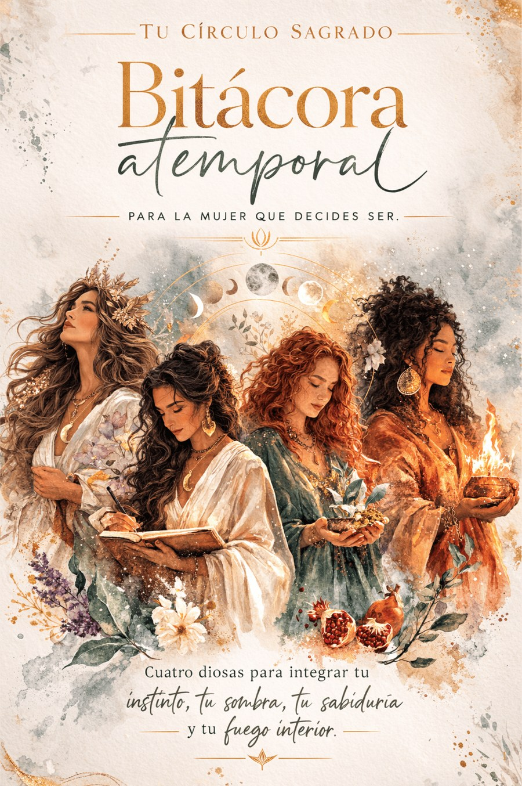
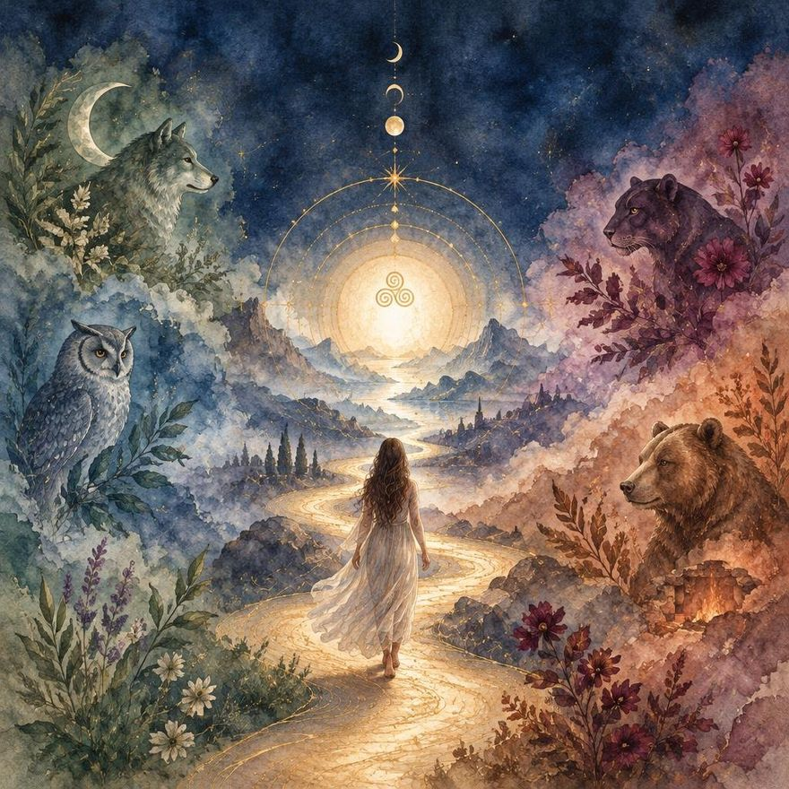
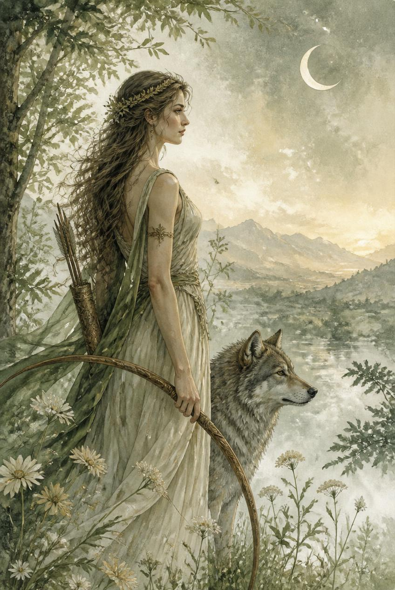
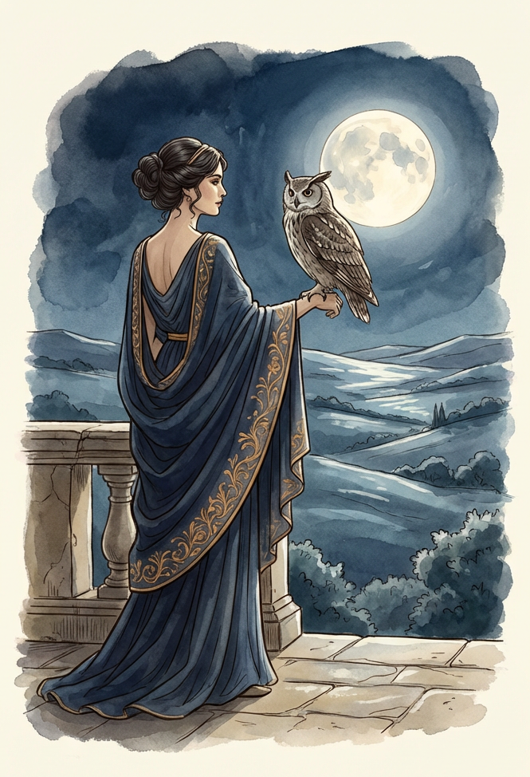
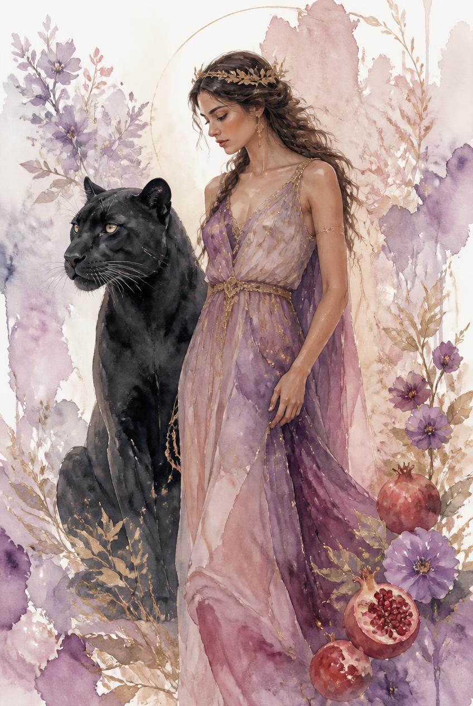
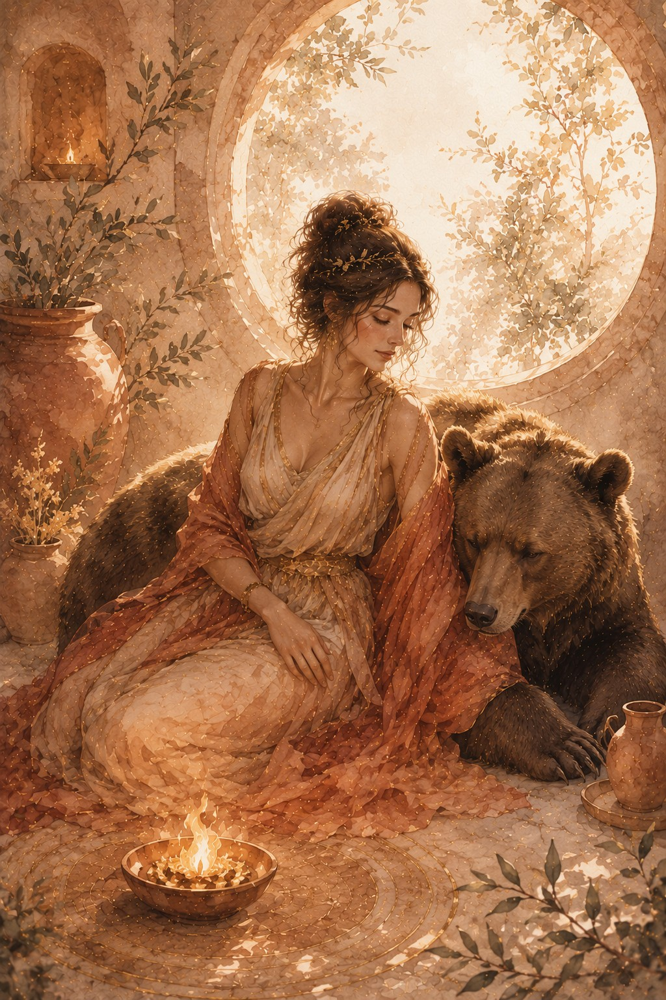
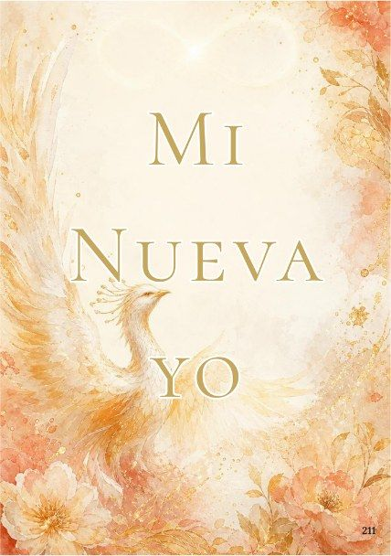
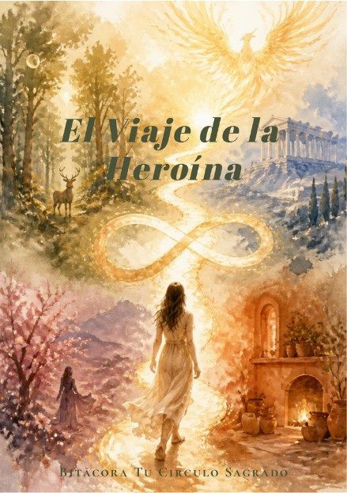

Tu Círculo Sagrado
Bitácora
Atemporal
Un mapa para las preguntas que sueles esquivar.
Hay algo en ti que ya sabe.
Un espacio para sentarte contigo misma sin máscaras. A través de 5 arquetipos y ejercicios de indagación, esta bitácora te acompaña en las pausas, las dudas y las decisiones que reconstruyen tu soberanía.
No es un diario. No es un libro de autoayuda. Es un mapa iniciático para recorrer a lo largo de 52 semanas, que te guía a través de cuatro arquetipos femeninos de la mitología griega —Artemisa, Atenea, Perséfone y Hestia— y una quinta voz propia, como portales de autoconocimiento profundo.
Cada una vive en ti. Tu instinto libre, tu mente estratégica, tu capacidad de transformación, tu hogar interior. El recorrido no te dice quién deberías ser. Te muestra lo que ya eres.
Eso es lo que la hace atemporal.

El Umbral
Antes de cruzar, hay un instante.
No de duda. De reconocimiento.
Aquí empieza el círculo. No con instrucciones, sino con una pregunta silenciosa que ya llevas contigo: ¿estoy lista?
No se requiere experiencia. No se requiere certeza. Solo la disposición de detenerte frente a una puerta y elegir abrirla.
Cuatro portales te esperan. Cuatro voces que ya viven en ti. Y al final del recorrido, una quinta: la tuya propia.
Esto es Tu Círculo Sagrado. Bienvenida al umbral.


Yo no te pido que te expliques.
No necesito saber de dónde vienes ni cuánto tiempo llevas buscando. Solo necesito que dejes de pedirte permiso.
Soy la que corre sola en el bosque. La que no necesita ser entendida para ser libre. La que conoce el silencio tan bien como conoce su propio nombre.
En mi portal vas a encontrarte con tu instinto, ese que llevas años callando para no incomodar, para no parecer demasiado, para caber en espacios que nunca fueron tuyos.
Aquí no se cabe. Aquí se es.
Trece movimientos. Cada uno una invitación a recuperar lo que siempre estuvo ahí: tu naturaleza libre, sin disculpas y sin adornos.
Yo ya estoy dentro de ti. Vine a recordártelo.

Detente un momento.
No para descansar. Para pensar con claridad.
Soy la que no actúa desde el impulso sino desde la comprensión. La que sabe que el conocimiento sin propósito es ruido, y que la sabiduría sin acción es solo teoría elegante.
En mi portal vas a construir algo contigo misma: una arquitectura interior. Una forma de entender cómo funciona tu mente, qué patrones has llamado verdad cuando solo eran costumbre, y qué capacidades llevas años subestimando.
No te pido que seas brillante. Te pido que seas honesta.
Trece movimientos que no te dan respuestas: te enseñan a hacerte las preguntas correctas.
La diferencia entre quien eres hoy y quien puedes ser no es de talento. Es de perspectiva.
Yo soy esa perspectiva.

Sé que tienes miedo de mirar hacia adentro.
Todos lo tienen. Pero te digo algo que no te van a contar en ningún otro lugar: el ir hacia adentro no es el problema. El problema es creer que no vas a volver.
Yo miré. Yo regresé. Y lo que encontré en la oscuridad cambió todo lo que creía saber sobre mí misma.
En mi portal no vamos a pretender que todo está bien. Vamos a mirar lo que has estado evitando, no para destruirte, sino porque ahí, en eso que no quieres ver, vive una versión tuya que lleva mucho tiempo esperando ser integrada.
La transformación no sucede en la comodidad. Sucede en el umbral entre lo que fuiste y lo que puedes ser.
Trece movimientos hacia adentro. Y la promesa que yo te hago, porque a mí me la cumplieron: siempre hay un regreso. Y siempre, siempre, se regresa diferente.

Ven. Siéntate.
No hay prisa aquí. No hay nada que demostrar ni ningún lugar al que llegar.
Soy el fuego que no se apaga. El centro al que siempre se puede volver. La que guarda el calor cuando todo afuera se vuelve frío.
En mi portal vas a aprender algo que el mundo no valora lo suficiente: el arte de habitarte a ti misma. De estar contigo sin escapar, sin distraerte, sin necesitar que alguien externo te diga que tu presencia tiene valor.
Tu hogar interior ya existe. Solo está esperando que lo visites.
Trece movimientos hacia la quietud, no como rendición, sino como poder. Porque la mujer que sabe estar consigo misma no necesita que nadie más le dé lo que ella ya tiene.
Yo soy ese fuego. Y ya vive en ti.

Has recorrido cuatro portales.
Has escuchado cuatro voces.
Y ahora entiendes lo que siempre supiste, pero no podías nombrar: que Artemisa, Atenea, Perséfone y Hestia no son figuras externas.
Son tú. Todas. Al mismo tiempo. En movimiento constante.
Este portal no tiene voz asignada porque la voz que lo habita es la tuya. Cinco movimientos que no son instrucciones sino espacio, un espacio que la bitácora deja deliberadamente abierto para que seas tú quien lo escriba, quien lo nombre, quien decida qué significa haber completado el círculo.
El fénix no renace de las instrucciones de nadie. Renace desde adentro.
Este portal lo escribes tú.
Lo que recibes
Todo lo que necesitas
para comenzar el círculo
52 semanas. Cinco portales, 57 movimientos. Diseño contemplativo pensado para ser habitado, no solo leído. Tu mapa iniciático completo.

Tu compañero de práctica. Aquí realizas todos los ejercicios, reflexiones y movimientos que la bitácora te propone en cada portal del recorrido.
Base Profesional
Una arquitectura sólida
para tu transformación
Aunque la experiencia de la Bitácora Atemporal es intuitiva y poética, su estructura no es azarosa. Cada movimiento se apoya en pilares de la psicología profunda y el desarrollo personal, integrados para ofrecerte un camino seguro, profundo y transformador.
Identidad y Narrativa
Reescribir tu historia, integrar tus sombras y comprender tus herencias, transformando el relato de tu vida en un viaje de la heroína consciente.
Cuerpo y Presencia
Escuchar la sabiduría de tu cuerpo, localizar tus tensiones y gestionar emociones desde la pausa, no desde la reacción.
Acción y Sentido
No solo explorar quién eres, sino trazar el camino de quién eliges ser, alineando tus acciones con tu propósito vital y tus fortalezas internas.
Integración Creativa
El aprendizaje no se queda en la mente, sino que se convierte en un sello simbólico en tu identidad.
Lecturas que sostienen el camino
Bibliografía Viva
Si el círculo despertó algo en ti y quieres ir más profundo, estos son los mapas que lo sostienen. No es una lista de lecturas obligatorias — es una invitación a seguir el hilo que más te llame.
El fundamento de todo el recorrido. Jung fue el primero en nombrar lo que ya sabíamos intuitivamente: que habitamos figuras arquetípicas que trascienden la historia personal.
Las diosas griegas como patrones psicológicos vivos en la mujer contemporánea. Compañera natural de este recorrido.
Sobre la naturaleza salvaje femenina. Cada historia que Estés analiza es un espejo distinto de lo que Artemisa ya sabe sobre ti.
El monomito reescrito desde la experiencia femenina. El descenso de Perséfone tiene aquí su cartografía más completa.
La técnica que enseña a escuchar al cuerpo como fuente de sabiduría. Directamente integrada en el portal de Hestia.
La herramienta con la que Atenea trabaja la arquitectura de tus creencias: separar la persona del problema y reautorarte.
La práctica de presencia que sostiene todo el recorrido. Hestia habita exactamente en este espacio de pausa consciente.
El contrapunto necesario al trabajo de sombra. Cuando Perséfone te muestra lo que has evitado, Neff enseña cómo sostenerlo con amor.
La base de la logoterapia que atraviesa el portal de Atenea. La vida pide ser orientada hacia algo más grande que uno mismo.
Reflexiones desde la psicoterapia existencial que sostienen la mirada honesta que toda la bitácora le pide a quien la recorre.
Despejando el camino
Preguntas frecuentes
No. La Bitácora Atemporal está diseñada para ser accesible desde cualquier punto de partida. Lo único que se requiere es la disposición de abrirte al proceso.
No. La bitácora está diseñada para contemplar y leer. Todo el trabajo práctico — ejercicios y reflexiones — se realiza en el Mapa para el Viaje de la Heroína, que viene incluido en tu compra.
No hay una respuesta única — y eso es intencional. Eso es lo que la hace atemporal: la recorres a tu ritmo, en el momento en que estés lista. Algunas mujeres la recorren en semanas; otras vuelven a ella en distintos momentos de su vida.
El recorrido está diseñado como un proceso iniciático — cada portal prepara el terreno para el siguiente. Se recomienda seguir el orden, aunque la bitácora es tuya y el camino también.
Es un producto digital de descarga inmediata. Una vez completado el pago, recibirás acceso directo a la Bitácora Atemporal y el Mapa para el Viaje de la Heroína.
El círculo te espera
El fénix no renace
de las instrucciones de nadie.
Renace desde adentro. Y tú ya sabes que es el momento.